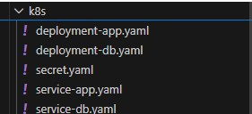
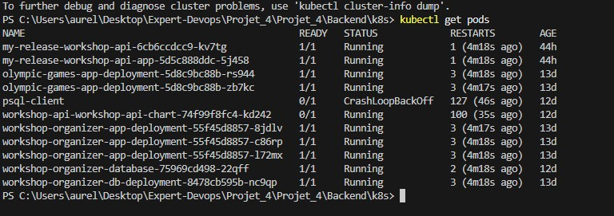
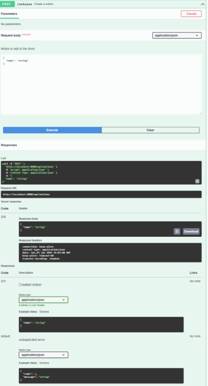
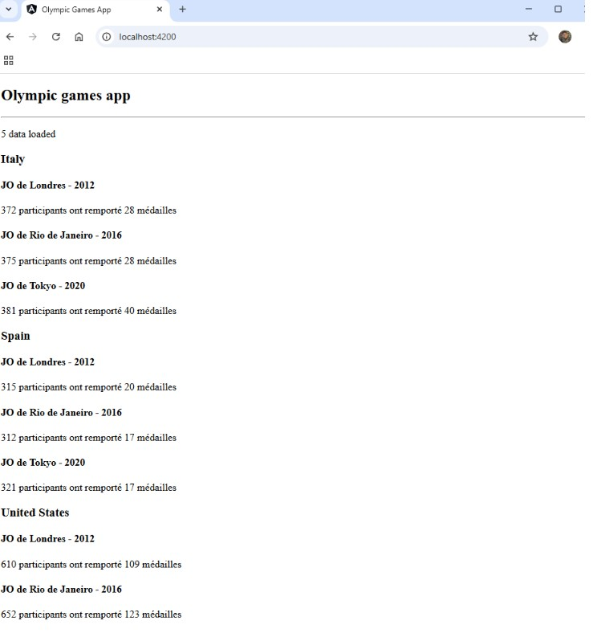

1️⃣ Déploiement initial avec Minikube
Installer et démarrer Minikube, puis créer les secrets pour récupérer le package depuis GitLab :
minikube start
kubectl create secret docker-registry gitlab-registry-secret \
--docker-server=registry.gitlab.com \
--docker-username=VOTRE_USERNAME_GITLAB \
--docker-password=VOTRE_PERSONAL_ACCESS_TOKEN \
--docker-email=VOTRE_EMAIL
kubectl apply -f secret.yaml
kubectl apply -f deployment-app.yaml
kubectl apply -f deployment-db.yaml
kubectl apply -f service-app.yaml
kubectl apply -f service-db.yaml

✔ Déploiement initial effectué
2️⃣ Vérification des pods
Vérifier que tous les pods sont bien démarrés :
kubectl get pods

✔ Pods en fonctionnement
3️⃣ Connexion au backend
Se connecter au backend depuis Kubernetes avec le port-forward :
kubectl port-forward service/workshop-organizer-app-service 8080:8080

✔ Backend accessible
4️⃣ Connexion au frontend
Se connecter au frontend depuis Kubernetes avec le port-forward :
kubectl port-forward svc/olympic-games-app-service 4200:80

✔ Frontend accessible